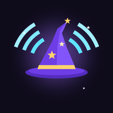

Each one switched on gets its own tab. Tip: hold the tab row to come straight here.
Markdown files in a folder you pick (an Obsidian vault works). Once backed up, each file keeps itself up to date. Restore adds what’s missing and never deletes.